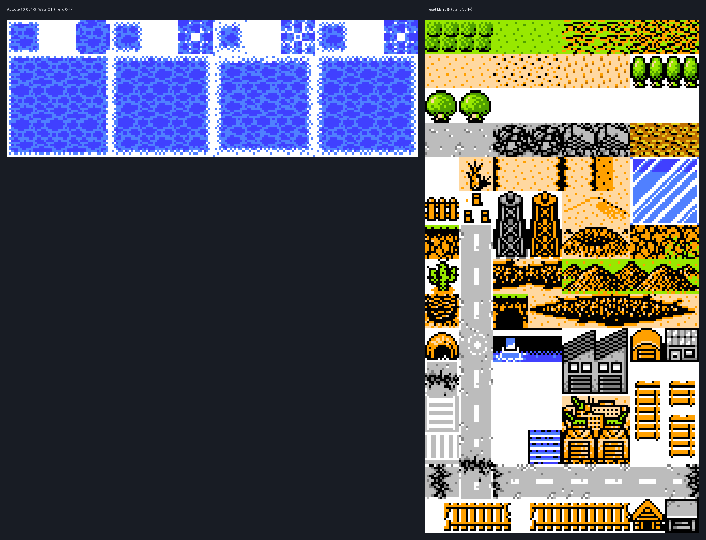
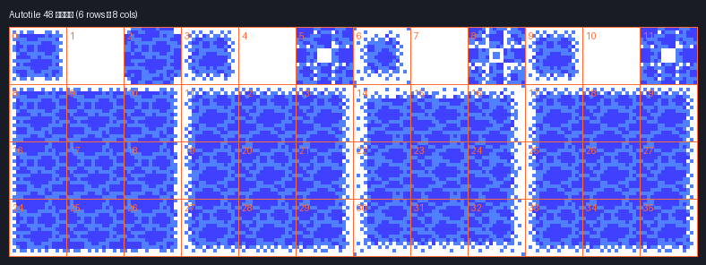
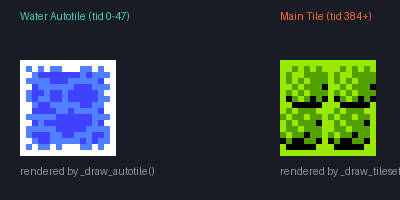
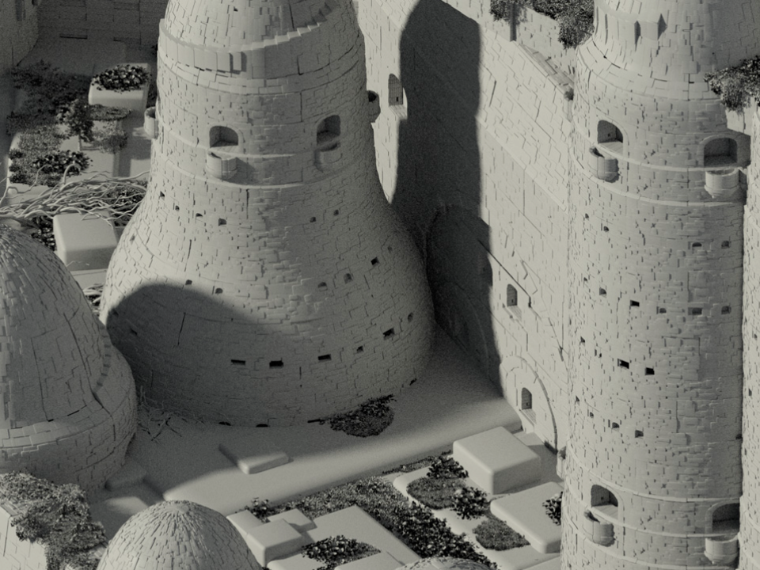
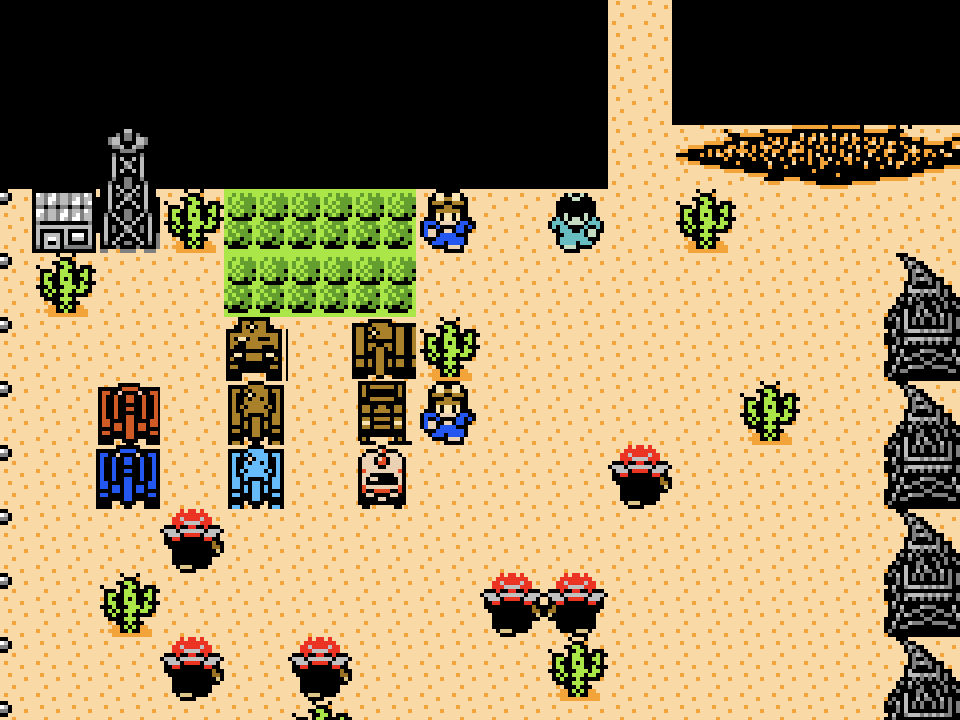

tileset_name 主图，没有加载 7 张 autotile 图。
| tile id 范围 | RMXP 原版来源 | Godot 修复前 | Godot 修复后 |
|---|---|---|---|
| 0 – 383 | 7 张 autotile 图 （每张 48 变体） |
从 tileset 主图的 tile 0-383 取 → 错误错位 | 从 autotile 图正确加载 ✅ |
| 384+ | tileset 主图tileset_name |
从 tileset 主图的 tile id-384 取（正确） | 不变 |
| 字段 | 值 | 说明 |
|---|---|---|
| tileset_name | "新-" | 主 tileset 图片，256×1600，8×50 = 400 tiles |
| autotile_names[0] | "001-G_Water01" | 第 1 张 autotile：水面自动拼接 |
| autotile_names[1-6] | 空字符串 | 本 tileset 只有 1 张 autotile 在用 |
| passages 总数 | 784 | 384 (autotile 区) + 400 (主图区) |

001-G_Water01 384×128（12×4 变体网格，共 48 种水面组合）；
右侧：Tileset 主图 新- 前 480px 预览（用于 tile id 384+）。


tile_layer.gd 现在对 tile id ≤ 383 走 _draw_autotile()，对 384+ 走 _draw_tileset()。


| 指标 | 修复前 | 修复后 |
|---|---|---|
| Unicode parsing error | 20 条 | 0 条 |
| SCRIPT ERROR | 0 | 0 |
| FATAL / push_error | 0 | 0 |
| ObjectDB 泄漏 | 4 个 leaked + 2 resources | 0 |
| 水（autotile）渲染 | 错误映射到主图 tile | 正确渲染 |
| BGM 播放 | 含 Shift-JIS 元数据污染 | 干净播放 |
| 进程存活（15s 测试） | 存活，但 EV2 事件中断 | 完整运行 |
分析 tileset JSON + tile_layer.gd：autotile_names 字段未被使用，tile id 0-383 和 384+ 映射重叠。
使用 mutagen 清除 10 个音频文件的 Shift-JIS Vorbis Comment / ID3 tag → 解决 20 条 Unicode warning。
新增 autotile_textures[] 数组，configure() 接受双纹理，_draw_autotile() 按 group/variant 正确切割。
新增 DB.autotile_texture()；MapScene 循环 autotile_names[0..6] 加载 7 张 autotile 图，清理引号残留。
rm -rf .godot → Editor 重新导入 → Headless + GUI 双模式测试 → 零 warning。
| 文件 | 变更类型 | 说明 |
|---|---|---|
scripts/core/tile_layer.gd | 重写 | 从单纹理 → 双纹理（autotile 数组 + tileset 主图） |
scripts/core/map_scene.gd | 修改 | _build_tiles() 加载 7 张 autotile 并传入 TileLayer |
scripts/autoload/db.gd | 修改 | 新增 autotile_texture(name) 方法 + Autotiles 目录 |
scripts/main.gd | 修改 | HEADLESS_TEST := false + 正常加载地图 |
assets/audio/*（10 文件） | 数据清理 | mutagen 清除 Shift-JIS 元数据 |
# scripts/core/tile_layer.gd — configure() 签名
func configure(tex, w, h, layers, indices, prio, min_prio)
func configure(ts_tex, autos, w, h, layers, indices, prio, min_prio)
# ↑ 新增 autotile 数组
# —— 渲染路径分流 ——
image_index = max(tid - 384, 0) # 一刀切
if tid < 384:
_draw_autotile(tid, dest) # autotile 图
else:
_draw_tileset(tid - 384, dest) # 主图
# scripts/core/map_scene.gd — 加载 autotile
for i in range(7):
name = autotile_names[i].replace("'", "").replace('"', '').strip_edges()
autos.append(DB.autotile_texture(name) if name else null)
# scripts/autoload/db.gd — 新增方法
func autotile_texture(name):
path = "res://assets/graphics/Autotiles/%s.png" % name
return load(path) if ResourceLoader.exists(path) else null$ Godot --path .
Godot Engine v4.7.2.stable.steam
OpenGL API 4.1 Metal - 90.5 — Apple M5 Max
[MapScene._process] frame=1 interp=true running=false
18 events loaded
[MapScene] autorun TRIGGERED for EV id=2 page=0
（无任何 WARNING / ERROR —— 干净输出 ✨）autotile_names 配置可能为空字符串，但多 tileset 组合逻辑（MM_System 扩展）后续仍需验证。